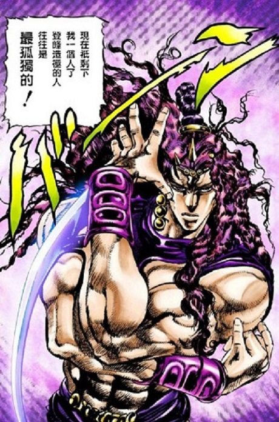

角色名稱:卡茲
生活在一萬年前的柱之男之一，是柱之男一族的天才，創造了石鬼面。
他的族人本是愛好和平，認為這會帶來危險，於是打算殺死卡茲，卻反被卡茲殺光，
只留下了一個僕人（桑坦納）和兩個嬰兒（艾德西，瓦姆烏）並陷入沉睡，在20世紀被納粹於義大利的地下遺蹟喚醒。為了成為完美生物而致力於尋找艾哲紅石，經驗豐富，老謀深算。
在和麗莎麗莎決鬥時奪得艾哲紅石，戴上嵌有艾哲紅石的石鬼面後進化成完美生物。
在火山口與喬瑟夫展開決戰，重創喬瑟夫後打算用波紋氣功殺死喬瑟夫，但是波紋卻擊中了艾哲紅石導致波紋增幅並引起火山噴發，卡茲被噴射到宇宙，在宇宙的低溫下變成了半生物半礦物的形態並停止了思考。
『我終於感到了無比的寂寞……』
by卡茲